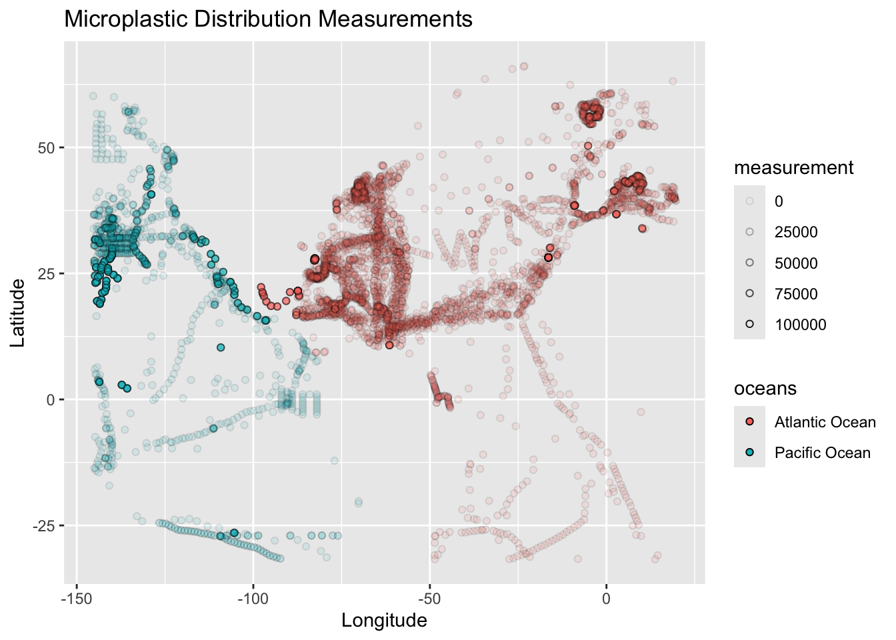
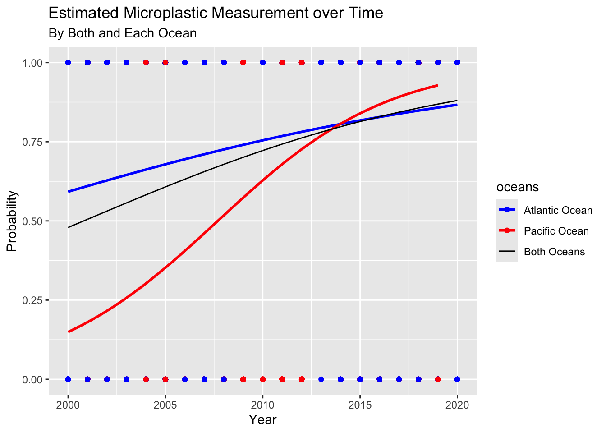
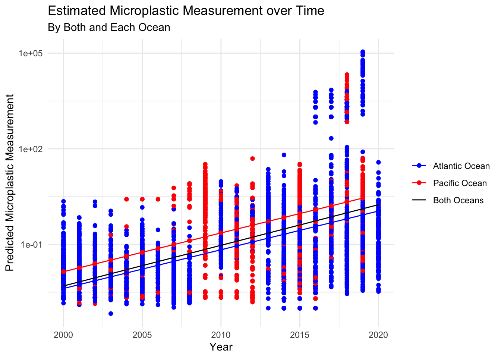
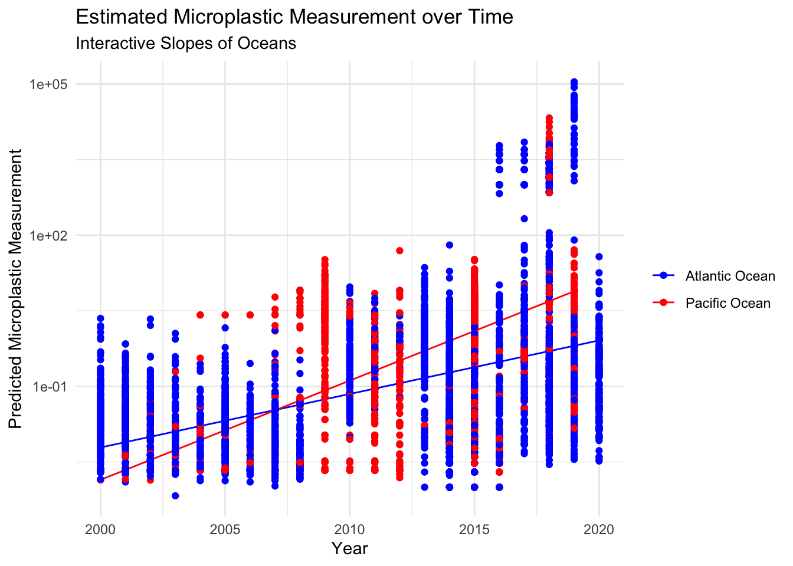

Load Data
mp <- read_csv(here("posts/2024-12-13-microplastic-distribution-analysis/data/Marine_Microplastics_NOAA.csv"))December 19, 2024
The full repository for this analysis can be found here.
Microplastics are plastic particles smaller than 5 millimeters. They are known to pose a significant threat to marine ecosystems and human health. In fact, they are ingested by marine organisms, potentially leading to starvation, entanglement, and the transfer of harmful chemicals up the food chain. 75 % of fish are estimated to have ingested microplastics, with each individual fish containing 2.5 individual particles on average (Clere et al. 2022). These microplastics can end up on our plates, posing potential risks to human health.
In fact, 60% and 25% of commercial fishing are caught in the Pacific and Atlantic oceans, respectively (Rao, 2024). This is important to consider when attempting to understand the distribution patterns and trends of microplastics in our oceans. This is crucial for effective mitigation strategies, as when we begin identifying areas and periods with high microplastic concentrations, we can target cleanup efforts and implement policies to reduce plastic pollution at its source. With this information, I would like to explore the spatial and temporal trends of microplastics in the Pacific and Atlantic Ocean, the two most fished oceans in the world.
To begin this study, I utilized the NOAA National Centers for Environmental Information’s (NCEI) Marine Microplastics Dataset (Nyadjro, et al. 2023) to investigate temporal and spatial trends in microplastic density. This database includes over 22,000 in-situ measured marine microplastic concentrations in our Oceans. Data is aggregated from large ocean surveys, citizen-science initiatives, and published literature. For our study, this data includes important information on microplastic concentrations, dates, and geographic locations, and was preprocessed to ensure consistency within analysis, as seen below. I used data from 2000-2020 and filtered to only the Atlantic and Pacific Oceans.
mp <- mp %>%
mutate(Year = year(mdy_hms(mp$Date))) %>%
mutate(Date = mdy_hms(mp$Date)) %>%
filter(Unit=="pieces/m3") %>%
select(c("Oceans", "Regions", "Measurement",
"Latitude", "Longitude", "Date", "Year")) %>%
filter(Year %in% 2000:2020) %>%
filter(Oceans!="Arctic Ocean") %>%
mutate(Oceans=as.factor(Oceans)) %>%
clean_names()
mp_gamma <- mp %>%
filter(!is.na(measurement), !is.na(year), measurement > 0) 
We can see the distributions of microplastic densities across the Pacific and Atlantic Oceans. There are more observations in the Atlantic, however, there are very dense measurements in the Pacific.
Two primary questions are addressed:
To answer these, logistic regression is used for presence/absence data, and gamma regression is applied to continuous measurement data.
Our null hypotheses are:
Statistical models are used to analyze the data: Logistic regression to assess the probability of microplastic presence over time, gamma regression to investigate the relationship between microplastic density, time, and ocean region.
Logistic regression was used because the response variable is binary (presence or absence of microplastics). Gamma regression is suitable for analyzing our microplastic densities because the response variable is continuous, positive, and skewed.
Variables:
measurement_bool: Binary variable indicating the presence or absence of microplastics.
year: Year of observation.
[1] "The slope is 0.1 and the P-Value is <2e-16.The AIC is 8524"
When plastic is collected, does its concentration change depending on the year?
Our first model (measurement ~ year) is included in the model to investigate the effect on the year on microplastic densities. This model considers only the temporal trend, assuming the rate of change in microplastic density over time is constant across all ocean regions.
[1] "The slope is 0.29 and the P-Value is <2e-16.The AIC is 58263"Our second model utilizes parallel terms, as it assesses microplastic density changes both over time and across different oceans, allowing for the possibility that the rate of change might differ between the Atlantic and Pacific. However, it assumes that the difference between the oceans remains constant across all years.
[1] "The slope is 0.28 and the P-Value is <2e-16.The AIC is 60989"Interaction terms (measurement ~ year*oceans) are included in the model to investigate potential combined effects of time and ocean region on microplastic density. This model also allows for different rates of change in different ocean regions. But unlike the previous model, it allows the difference between the oceans to vary over time. This means that the impact of the ocean region on microplastic density might increase or decrease over the years. For example, microplastic density in the Atlantic might be increasing at a faster rate than in the Pacific in recent years.
[1] "The slope is 0.24 and the P-Value is <2e-16.The AIC is 63136"

The logistic regression analysis suggests a statistically significant positive relationship between time and the probability of encountering microplastics. The slope is increasing by 0.1 pieces/m3 per year and the P-Value is <2e-16. This finding indicates that the likelihood of finding microplastics in the ocean is increasing over time, both in the Pacific and the Atlantic.
The gamma regression results reveal significant main effects of both year and ocean region on microplastic density. Specifically, the analysis indicates that microplastic density is increasing over time and is generally higher in the Pacific Ocean compared to the Atlantic Ocean. This stems from our p-value for each model at <2e-16. Our slope for modeling only the year yields an increase of 0.29 microplastic pieces per m^3. Our parallel slope of the year and oceans yields an increase of 0.28 microplastic pieces per m^3. Our interactive slopes of the year and oceans yields an increase of 0.24 microplastic pieces per m^3.
In our models, however, we find an AIC of 58,263, 60,989, and 63,136. While relatively close to each other, we see that this gamma model does not fit the data as well as the logistic model, with an AIC of 8524. If we are to continue with this analysis, this suggests that the rate of increase in microplastic density over time is similar in both the Atlantic and Pacific Oceans. Though all of our P-Values are significant (less than 2e-16), we know to take this analysis with a grain of salt. The AICs suggest the model does not fit well on our data. We can speculate why in the next section.
The analysis presented here provides valuable insights into temporal and spatial trends in microplastic density. However, it is essential to acknowledge the limitations of the study.
Data Availability:
Model Complexity:
Environmental Variability:
Future research could address these limitations by:
Expanding data collection:
Refining statistical models:
Investigating drivers of microplastic distribution:
One idea may be to include geospatial fishing data as a way to understand how the fishery industry is contributing the microplastics in the ocean if at all. Additionally, we could model population density, proximity to major rivers, and the river water flow into the oceans. This may give us an idea on how our daily activities may be leading to mciroplastic densities.
This analysis demonstrates an increasing trend in both the probability of encountering microplastics and the density of microplastics over time. While the Pacific Ocean exhibits higher microplastic densities overall, the rate of increase over time appears to be similar across both the Atlantic and Pacific Oceans.
Though our p-values imply statistically significant results, our AICs should give us pause when coming to conclusions. A more robust model, like those stated in next steps, should be applied to truly understand the leading drivers of microplastics.
The findings underscore the urgency of addressing microplastic pollution. Targeted mitigation efforts, including reducing plastic waste at its source, improving waste management systems, and developing innovative cleanup technologies, are crucial to protect our oceans and safeguard human health. Further research, incorporating more comprehensive data and advanced modeling techniques, is essential to refine our understanding of microplastic distribution and inform effective mitigation strategies.
The NOAA National Centers for Environmental Information’s (NCEI) marine microplastics database is a crucial resource for understanding the global distribution and impact of microplastics (plastic particles less than 5mm in size). The database compiles data from various sources, including ocean surveys and citizen science initiatives, to provide a comprehensive, publicly accessible archive of microplastic concentrations in various marine environments. Its purpose is to support research, inform policy decisions, and facilitate international collaboration on addressing this widespread environmental pollutant by standardizing data collection and promoting data sharing. The database’s open-access nature is highlighted as vital for a broad assessment of the environmental problem and effective management strategies.
| Reference | Citation | Link |
|---|---|---|
| Quantification and characterization of microplastics in commercial fish from southern New Zealand. Marine Pollution Bulletin, 184, 114121. | Clere, I. K., Ahmmed, F., Remoto, P. I., Fraser-Miller, S. J., Gordon, K. C., Komyakova, V., & Allan, B. J. M. (2022). | Marine Pollution Bulletin |
| Mapped: Where the world’s fish are caught, by ocean. Visual Capitalist. | Rao, P. (2024, September 15). | Fishing Locations |
| The NOAA NCEI marine microplastics database. Sci Data 10, 726 (2023). | Nyadjro, E.S., Webster, J.A.B., Boyer, T.P., Cebrian, J., Collazo, L., Kaltenberger, G., Larsen, K., Lau, Y., Mickle, P., Toft, T., Wang, Z. | NOAA NCEI |